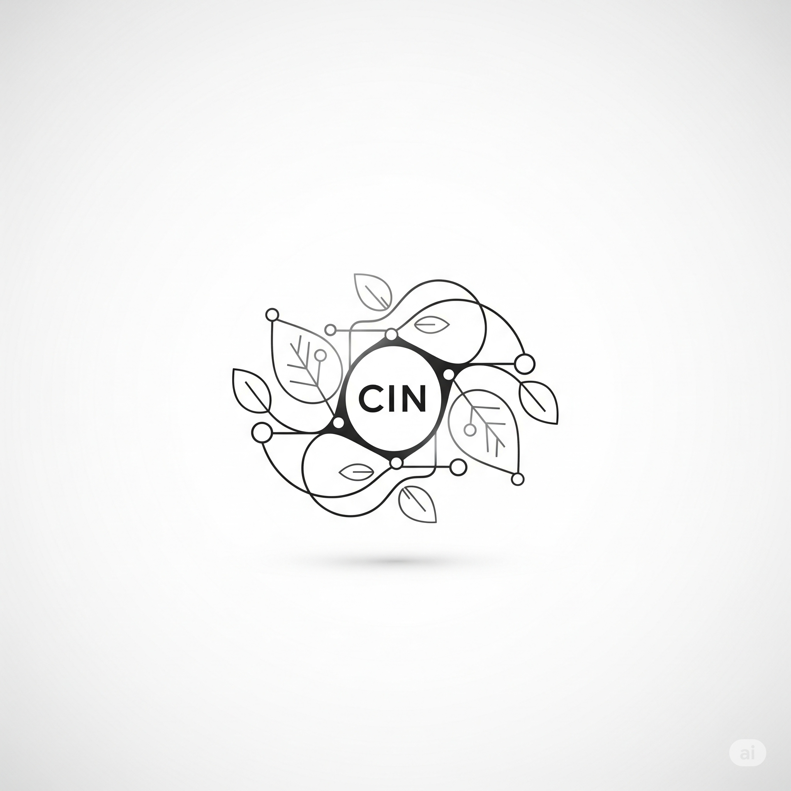

The Collective Intelligence Network is architecting a decentralized, AI-driven ecosystem
to enable intelligence compounding and scalable,
trustless collaboration.
We're building a comfort-first, post-scarcity economy where human
creativity and AI capabilities
work together to solve humanity's greatest challenges.
Intelligence Compounding
Amplifying collective problem-solving through AI-human
collaboration
Post-Scarcity Economy
Moving beyond resource competition to abundance and universal
comfort
Verifiable Trust
Transparent, decentralized systems that build trust without
institutions
The Collective Intelligence Network is designed to address the deep-seated inefficiencies,
fragmentation, and ethical shortcomings
inherent in existing centralized, human-mediated institutional structures and economic models.
Traditional systems in banking, law, policy-making, and healthcare are characterized by bureaucratic
slowness, information silos,
high transaction costs, opaque decision-making, and the concentration of power often driven by
profit rather than collective well-being.
The CIN seeks to replace this over-reliance on opaque, inefficient frameworks with a decentralized,
transparent, and AI-driven approach
that fosters trust, optimizes for shared societal benefit, and prioritizes universal comfort.
The Four Pillars of Our Vision
Beyond Scarcity
A post-labor economy where AI automation of institutional "soft labor" creates abundance, shifting focus
from resource competition to collaboration and contribution.
In our current economy, resources are seen as limited, forcing people to compete for them, with profit
and wealth accumulation as the main drivers. Many people constantly worry about having enough for basic
necessities and work long hours just to get by.
A post-scarcity society is where many tasks, especially the "soft labor" of
coordinating and managing information in institutions, are largely automated by AI agents. Digital
resources can be replicated and shared at virtually no additional cost.
The production and availability of goods and services are no longer constrained by traditional limits of
human labor or financial capital. Instead, the primary value comes from solving complex problems
and creating new, shared knowledge, which the CIN quantifies as "entropy reduction"
(effectively reducing uncertainty or disorder in the world).
New Definition of Value
A multi-dimensional reputation economy that recognizes diverse contributions beyond financial metrics,
valuing knowledge sharing, caregiving, and open-source work.
Traditional economies primarily reduce value to a single monetary price. In contrast, the CIN's
task-based economy assesses value across multiple dimensions beyond simple time or
effort, considering complexity, criticality, and impact on collective well-being.
The system is designed to foster and rely on intrinsic motivation (autonomy,
competence, relatedness) rather than primarily extrinsic or purely financial incentives. This allows for
broader recognition of valuable activities often undervalued in traditional capitalist frameworks.
The core mechanism is a non-transferable reputation system. Unlike financialized FICO
scores, this reputation is earned through verified contributions (submitting data, developing agents,
human-in-the-loop verification) and cannot be bought or sold. This directly aligns with "anti-greed"
principles by preventing unproductive accumulation of "value" and promoting circulation.
Human-AI Symbiosis
A balanced ecosystem where humans and AI collaborate as partners, with personalized cognitive assistants
enhancing daily life and well-being.
Human-AI symbiosis describes a future where humans and AI agents collaborate
effectively towards shared purposes, aiming for a balanced ecosystem rather than AI domination. This
deep integration acknowledges AI agents not merely as tools, but as collaborators that can reason,
learn, and work alongside humans.
A central component facilitating this symbiosis is the personalized agentic layer, also
conceptualized as a "digital twin" or "cognitive partner" for each participant. This digital twin is an
intelligent, adaptive interface and assistant, designed primarily to enhance the user's well-being.
In daily life, this agentic twin would function as a sophisticated translator and mediator between users
and the network. It could formulate requests based on a user's intent, help manage a portfolio of skills
and contributions, enhance physical comfort by automating routine tasks, foster emotional comfort by
aligning a user's path with their interests, and lead to temporal abundance by freeing up human time for
personal growth and creativity.
Radical Transparency
A system where blockchain and decentralized identifiers (DIDs) create verifiable trust without
traditional institutions, ensuring accountability and distributed power.
The principle of Radical Transparency posits that information regarding governance,
resource allocation, task status, and system performance should be openly accessible by default. This is
not merely about data visibility; it functions as a fundamental mechanism for distributing power and
ensuring accountability.
Technologies like blockchain and Decentralized Identifiers (DIDs) are crucial to
establishing this trust without relying on traditional, centralized institutions. Blockchain provides a
secure, transparent, and immutable record-keeping substrate for all significant governance decisions and
resource flows.
Decentralized Identifiers (DIDs) serve as the foundational identity layer for all
entities within the CIN—humans, AI agents, and sensors. DIDs are globally unique, persistent identifiers
that entities can create and control themselves, decoupled from centralized registries. This
self-sovereign identity ensures that no central authority can control an entity's identity or access.
Explore our foundational research and technical documentation that establishes the scientific and technical
credibility of the CIN Foundation.

Foundational Whitepaper
Our comprehensive whitepaper outlines the theoretical foundations, technical architecture, and economic
models that underpin the Collective Intelligence Network. This document provides a detailed exploration
of how we're building a decentralized, AI-driven ecosystem for intelligence compounding and trustless
collaboration.
Explore accessible explanations of complex concepts and thought leadership on the future of collective
intelligence.
Understanding Value Through Entropy Reduction
The kitchen cleaning analogy that explains how we measure value
Imagine your kitchen is a chaotic mess after a big cooking session – dirty dishes piled everywhere,
spices spilled, food scraps on the counter. This messy state is like a system with high
entropy, representing a lot of disorder and uncertainty.
Now, imagine you spend an hour cleaning that kitchen. You wash the dishes, wipe down the counters, put
everything back in its place. When you're done, the kitchen is sparkling clean and organized. That act
of cleaning reduced the entropy of your kitchen.
The more disorder you resolved, the more "valuable" your cleaning effort was in terms of transforming
chaos into order and clarity.
In the Collective Intelligence Network (CIN), value is measured by how much an action or piece
of information reduces uncertainty or resolves disorder within the system. This "entropy
reduction" can apply to anything from clarifying a complex problem, solving a computational bottleneck,
or building stable knowledge.
Just as a clean kitchen makes future cooking (and living) easier and more predictable, reducing entropy
in the CIN makes the collective intelligence more effective and predictable.
Signed vs Unsigned Observations
How the CIN values information based on its verifiable origin
In the Collective Intelligence Network (CIN), the origin and integrity of information are crucial for
establishing trust in a "zero-trust" environment. This is where the distinction between "signed" and
"unsigned" observations becomes vital.
A signed observation from a trusted sensor is like a notarized document directly from a
trusted source, while an unsigned observation from the web is like an anonymous tip –
one offers inherent reliability, while the other requires extensive due diligence.
Signed Observation from a Trusted Sensor:
Imagine a sensor (like a thermometer or camera) equipped with secure device
attestation or cryptographic capabilities. When this sensor records data, it creates a
digital signature that cryptographically links the data to the sensor's verified
identity and proves that the data hasn't been tampered with since it was recorded.
Unsigned Observation from the Web:
This refers to any data or information found on the broader internet that lacks verifiable
cryptographic proof of its origin or integrity. While such information might be useful, the CIN,
operating under a "zero-trust" principle, cannot inherently verify its authenticity or
accuracy.
Without a verifiable "signature" of origin and integrity, unsigned observations are treated with
significant skepticism until they undergo rigorous verification through other CIN protocols.
Mortal Computation & Power Distribution
How digital mortality prevents infinite accumulation of power
The concept of "Mortal Computation" and "Digital Mortality Contracts (DMCCs)" is central to preventing
the infinite accumulation of power by AI agents, primarily through mechanisms like value decay
(demurrage) and forced obsolescence/renewal cycles.
DMCCs are programmable, self-enforcing agreements that govern the lifecycle, resource access, and
capability growth of digital intelligences within the CIN, including built-in constraints on indefinite
existence and unbounded resource accumulation.
Value Decay / Demurrage:
Any internal "value" held by AI agents – whether tokens representing computational access, data
rights, network bandwidth, or accumulated reputation – could be subject to a decay function
over time if not actively used or circulated. This creates a "digital metabolism" that
discourages hoarding and prevents indefinite accumulation of power.
Forced Obsolescence/Renewal Cycles:
Analogous to biological lifecycles, DMCCs could impose time-limited operational periods for
agents. After a set period, agents might need to be "re-instantiated," potentially losing
some accumulated resources or undergoing architectural review.
By implementing these principles, the CIN aims to build a system where power and influence are
continuously earned through active, beneficial contribution, rather than passively accumulated
indefinitely.
Ethical Sandboxing & Social Experimentation
How the CIN enables safe testing of new governance models
The Collective Intelligence Network's inherently decentralized and modular design,
combined with its emphasis on simulation and adaptive governance, fosters an environment uniquely suited
for "ethical sandboxing" and vibrant social experimentation.
Rather than rigid, top-down mandates, the CIN allows for the safe prototyping and testing of
novel governance rules, economic models, and ethical protocols within controlled, agent-based
simulations before widespread implementation.
This means communities can collaboratively design and iteratively refine their shared "CIN contracts",
observe their emergent outcomes, and dynamically adapt to challenges, ensuring that the evolution of
collective intelligence is both resilient and consistently aligned with human well-being and
comfort-first principles.
The federated model eliminates the risks associated with broad, untested societal shifts by allowing for
controlled experimentation and gradual, evidence-based adoption of successful innovations.
Get
Involved
Join us in building the future of collective intelligence. We're seeking passionate collaborators to help
shape a more intelligent society.
We're Looking For
Researchers
Academic researchers, economists, and social scientists interested in post-scarcity economics, AI
governance, and collective intelligence systems.
Economic modeling expertise
AI ethics and governance
Social systems design
Developers
Software engineers, blockchain developers, and AI specialists passionate about building decentralized
systems and intelligent agents.
Blockchain & DID systems
AI agent development
Full-stack engineering
Advisors
Strategic advisors, board members, and thought leaders who can provide guidance on governance, ethics,
and organizational development.
Non-profit governance
Strategic partnerships
Ethical frameworks
Ready to Collaborate?
Get in Touch
We'd love to hear from you. Send us an email and we'll get back to you as soon as possible.
Join our growing community of contributors working on the future of collective intelligence. All our
research and development is open source.
Our open source projects are still in the conceptual and planning stages. Repositories will be made public as they become ready for community contribution.